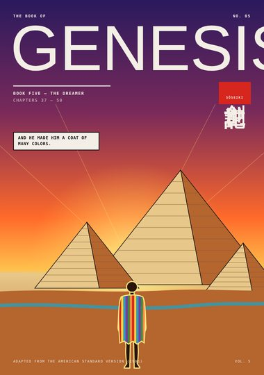
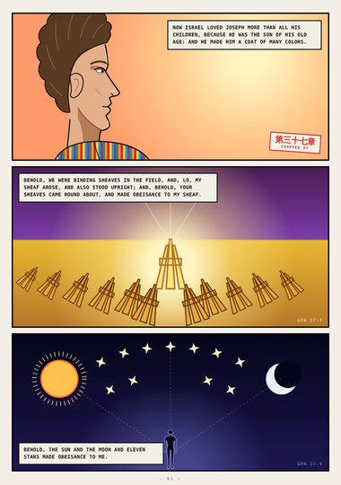
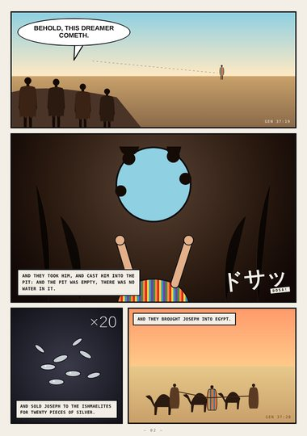
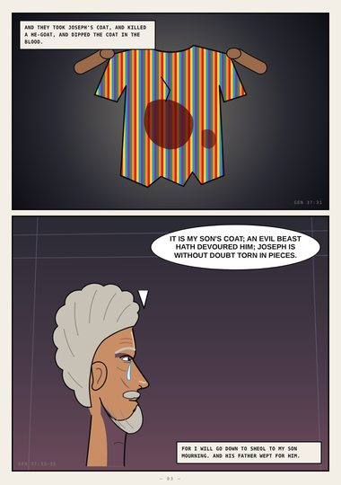
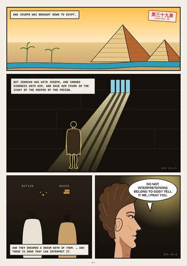
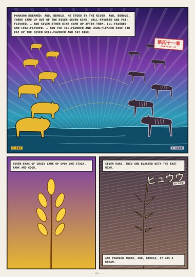
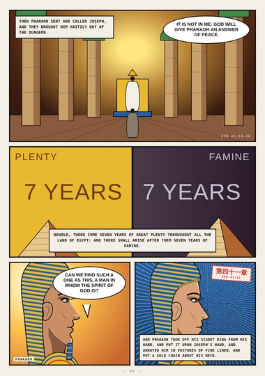
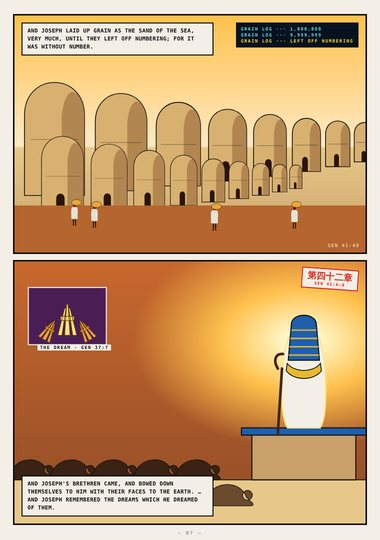
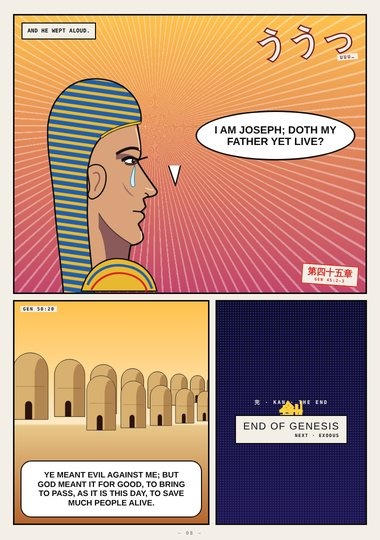

Genesis · Book Five · Genesis 37–50
The Dreamer
Joseph's coat of many colors, the pit, Pharaoh's dreams, the granaries of Egypt, and the brothers forgiven.
Start reading ›Pages

CoverCoverGenesis 37–50
Page 1The Coat and the DreamsGenesis 37:3–9
Page 2The PitGenesis 37:18–28
Page 3Jacob's GriefGenesis 37:31–35
Page 4Egypt and the PrisonGenesis 39 – 40
Page 5Pharaoh's DreamGenesis 41:1–7
Page 6Before PharaohGenesis 41:14–42
Page 7Grain as the SandGenesis 41:47 – 42:9
Page 8I Am JosephGenesis 45:1–4; 50:20